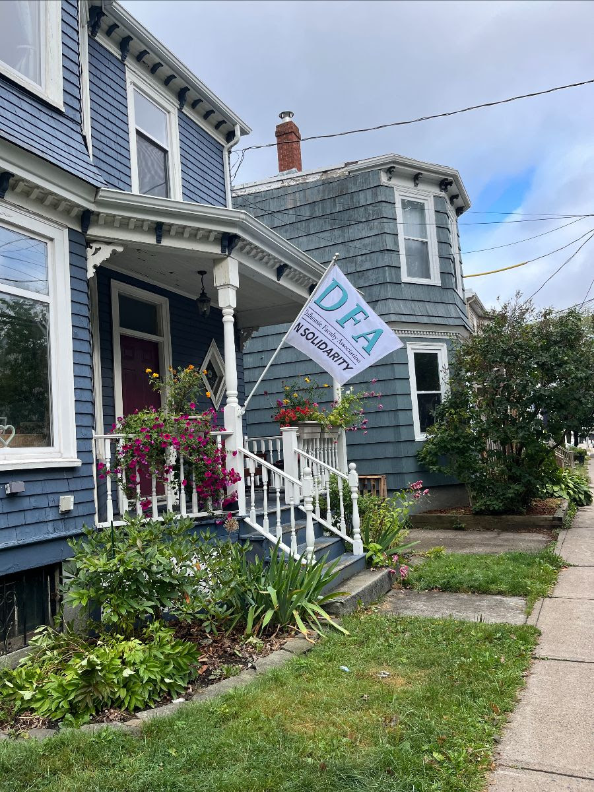
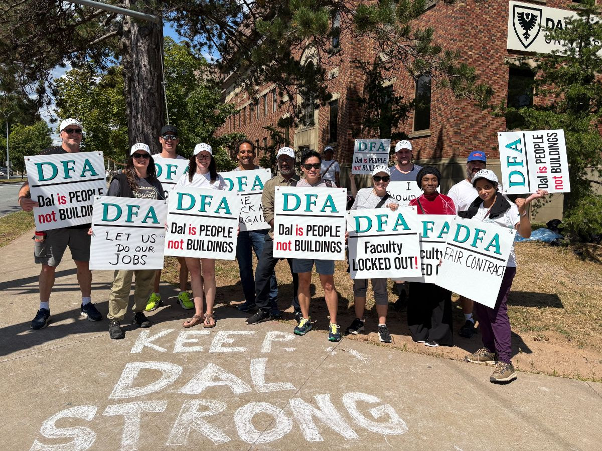
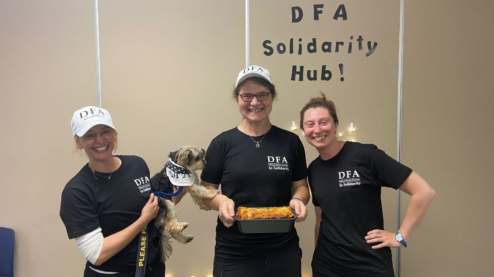
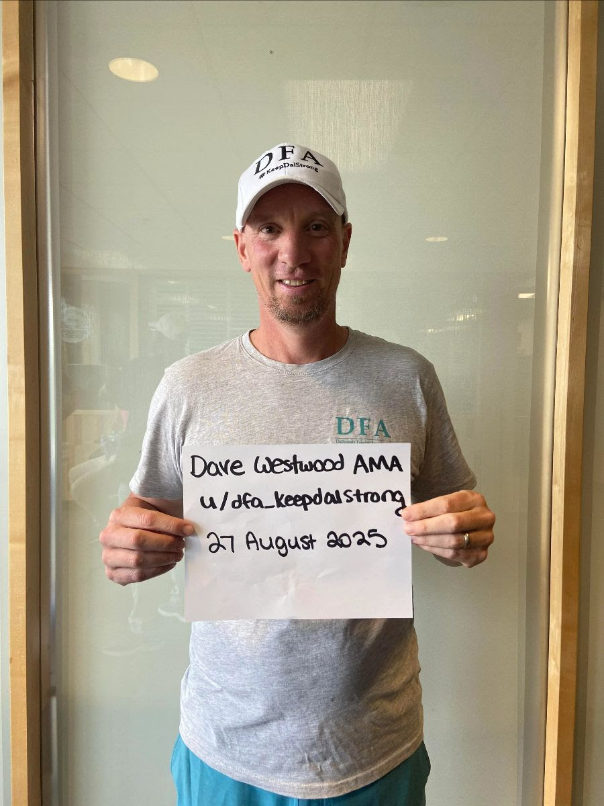
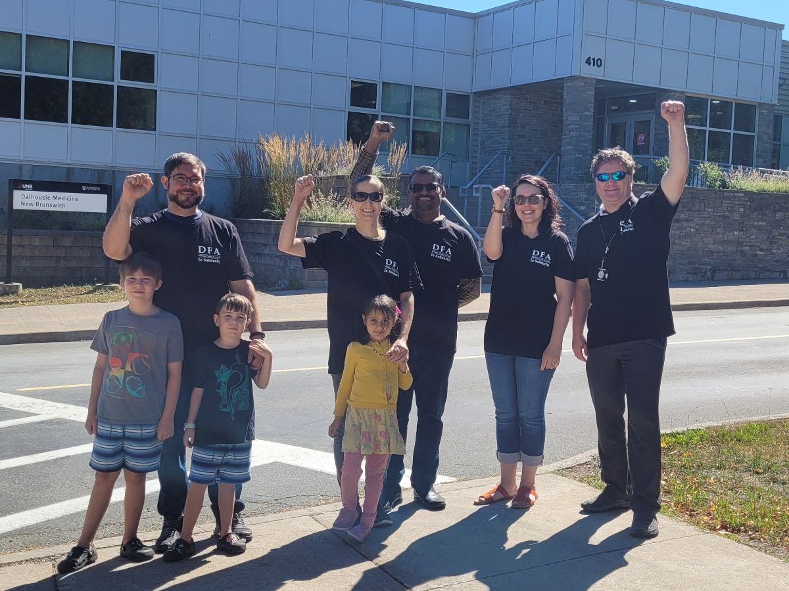

Daily Bulletin #3, August 28
Have an idea for something to cover?


Stop Dictating; Start Negotiating: Leadership Addresses the Binding Arbitration Statement
You will now have seen President Dave Westwood’s strong response to what he calls–accurately–the Board’s latest “weird behaviour.” If you haven’t read it yet, we encourage you to check it out on our new public-facing website, http://keepdalstrong.ca/. Here’s a direct link to the statement.
We won’t rehash what Dave says so well, but do think it’s worth expressing how frustrated, disappointed, and upset we all are at the board’s continued bad behaviour. Our headline again comes from Dave who tossed this nugget out while chatting with members at the Solidarity Hub in the SUB. The Board needs to learn that its job is to negotiate a deal with us, not dictate terms to us.
We will not let them tell us only one part of our proposal is worthy of response! As Dave says,
“The Board did not communicate that their ‘offer’ to proceed to interest arbitration is conditional on the DFA dropping all unresolved proposals. In other words, it would be an interest arbitration on the sole issue of the IMC.
“As a reminder, we have many proposals still on the table that deal with important issues to our Members: conversion of ‘long-term’ limited-term appointments to career-stream appointments; expanded parental leave benefits; expanded access to childcare; increased flexibility in class scheduling policies to acknowledge caregiving responsibilities. Many of these proposals would provide clear and immediate benefits to early-career academics who are clearly struggling with many economic and other challenges.”
We will update you when and as we can on the Executive’s discussion if these developments, but for now we know who we are and what we stand for. One Day Longer, One Day Stronger!

Friday Rally and “Chalk and Talk”
The Job Action team sent the below around yesterday, but we want to remind you that Friday’s day of action will look a little different than our usual activities. We really hope the “Chalk and Talk” (which one committee member is… a little too proud of coining) will be an opportunity to spread positivity and actual information to the students and their families and friends, rather than the misinformation the Board and Administration are spreading. After all, we’re educators, and we can teach them the difference!
And we’re very excited for our noon rally on Friday! Read more below.
Thank you for the remarkable work you all have been doing as we close in on our first full week of job action! Although this lockout has been imposed upon us by the Board, our collective response has been amazing and only possible because of your efforts.
Given this important milestone, as well as the increased presence of students and parents on campus as we approach the start date of term, we are planning a special day of job action for this Friday, August 29, ahead of labour day weekend.
*Halifax - Special Duties*
Instead of running our regular picket lines, we are going to have Halifax picketers meet with your picket captains at the Student Union Building, Rm 302. There we will have supplies for the start of every normally scheduled picket line for you to head out for a “Chalk and Talk” action - we’ll provide your picket line with posters (and tape), chalk, and information sheets to share with students (and parents) on campus to let them know about what’s at stake with the Board’s decision to lock out the faculty and why we need the Board to come back to the bargaining table and help us get a fair collective agreement rather than compromise the academic term.
You’ll still show up and finish at your regular time, but we’ll be sending you out with your picket captains in smaller groups to get the word out and engage with students and their families arriving on campus. We’ll have talking points to share with you to help engage with students and let them know that we all want to get back to our jobs with a fair deal for our membership.
*Truro Members*
Instead of running our regular picket lines in Truro, we’ve arranged for a bus to transport you in to join your colleagues in Halifax for our mid-day rally. If you want to make use of the bus, pick up will be at 9:30 am in front of the MacRae Library at 35 College Road in Bible Hill. You will then arrive in Halifax for the mid-day rally, and afterwards will be picked up in front of the Killam Library at 1:30 in order to depart Halifax to return to Bible Hill.
*Mid-day Rally*
To complement our outreach and engagement with students, we will also be holding a rally in front of Killam Library (where colleagues from Truro will be joining!). The rally begins at 12 noon and will last approximately 40 minutes. We will be asking you to invite all students you speak to join our rally, which will feature the President of CAUT, Robin Whitaker, our own President Dave Westwood, and Ajay Parasram, one of the members of our Job Action Committee. We’ll also have freezies to distribute to students (and members) during the event.
We encourage all DFA members to join this rally. Attendance is voluntary and in addition to your participation in scheduled picket shifts for the special duties for Friday. For logistics, please talk to your picket captain.
We hope to see you at the rally, and our thanks again for all your efforts during our job action!

LTA Letter of Support
Many of you will have seen the email below, but we wanted to bring it to your attention again in case you missed it in the rush of communications.
The Board of Governors’ “final” offer disregarded the needs of LTA instructors, a critical component of our university, leaving them in a precarious position. Many LTAs are currently being offered contracts for one-year or less, rather than three-year contracts, and expected to continue their crucial roles at Dalhousie. To continue standing in support of precarious early-career scholars with significant expenses, it is vital to remember that for our fellow LTAs, they need both an improved IMC and contracts with job security. This is a critical job security issue for some of our most vulnerable faculty members. We are asking that you read the linked letter and then click at the top to offer your support by signing the letter.
Our fellow LTAs are seeking your support for conversion to permanent contracts. Currently, there is no clear path to conversion to a permanent position, and the DFA’s position is that LTAs with over five years of service should be converted to permanent, stable positions. A previous letter was briefly circulated around this issue but was not fully circulated due to the lockout. This letter is an updated version to reflect the current situation. If you signed the previous letter, please sign this one as well by clicking at the top of this letter.

Lectures on the Line
One of our Oxford pickets has developed an amazing activity: Lectures on the Line! Members spend 5-15 minutes sharing an element of their areas of research or teaching. We think this is fantastic, and would especially like to encourage it while students and their families are around. Let’s remind them–and ourselves–of some of the primary activities that make Dalhousie great: our work and our teaching! And we can make connections and learn new things in the process? Amazing.
Let us know if you plan some Lectures on Your Line, and we’ll advertise!
Dave Westwood Answers Anything and Everything on Reddit!

Check out Dave’s “AMA” (Ask Me Anything) on Reddit: Dave fielded questions on everything from the budget, to student anxieties about the term, to his favourite ice cream (ummm, Dave, we have questions).
Picketing a Province Over!
One special shout-out to our New Brunswick colleagues, holding the line for an entire province!! Our solidarity knows no borders! Amazing job!!
[With that, folks, your intrepid editor has to apologize for skipping the many, many other shout-outs, the new pictures from the line, and, yes, thousands of the cutest pupper pictures ever! We’ve also heard you on the playlists: said editor is rapidly trying to increase their skills with this platform; stay tuned. But it’s been a day of ups and downs, so expect some more positivity, pics, and puppies soon!]
